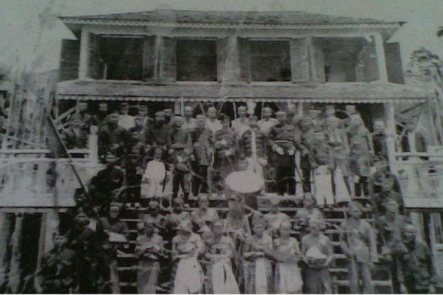

Tentang Kota Sintang
Kabupaten Sintang adalah salah satu daerah otonom tingkat II di bawah provinsi Kalimantan Barat. Ibu kota kabupaten ini terletak di Kota Sintang. Kabupaten ini memiliki luas wilayah 21.635 km² dan berpenduduk sebesar 413.369 jiwa (2019). Kepadatan penduduk 19,11 jiwa/km2 yang terdiri dari multietnis dengan mayoritas suku Dayak dan Melayu.
Daerah Pemerintahan Kabupaten Sintang, pada tahun 2018, terbagi menjadi 14 kecamatan, 16 kelurahan, dan 361 desa. Kecamatan terluas adalah Kecamatan Ambalau dengan luas 29,52 persen dari total luas wilayah Kabupaten Sintang, sedangkan luas masing–masing kecamatan lainnya hanya berkisar 1–29 persen dari luas Kabupaten Sintang.
Sebagian besar wilayah Kabupaten Sintang merupakan perbukitan dengan luas sekitar 13.573,75 km2 atau sekitar 63,57% dan dataran seluas 8.061,25 km2. Kabupaten Sintang merupakan kabupaten terbesar ke-dua di Provinsi Kalimantan Barat, setelah Kabupaten Ketapang. Wilayah ini berbatasan langsung dengan Serawak, Malaysia. Mata pencaharian utama masyarakat di kawasan ini adalah petani kelapa sawit dan karet.
Sejarah Kota Sintang

Tahun 1600 Raja Sintang mengirim utusan ke Banjarmasin melewati jalur sungai Katingan untuk menyalin Kitab Suci Al-Quran. Kontrak tahun 1756, Sultan Tamjidullah I dari Banjarmasin dengan VOC-Belanda mendaftarkan Sintang dalam wilayah pengaruh Kesultanan Banjarmasin.Tanggal 1 Januari 1817 Raja Banjar Sultan Sulaiman menyerahkan Sintang kepada Belanda.Tahun 1823 kontrak Sultan Sintang dengan Hindia Belanda. Tanggal 4 Mei 1826, Sultan Adam dari Banjarmasin menyerahkan Sintang kepada Hindia Belanda. Menurut Staatsblad van Nederlandisch Indië tahun 1849, wilayah ini termasuk dalam wester-afdeeling berdasarkan Bêsluit van den Minister van Staat, Gouverneur-Generaal van Nederlandsch-Indie, pada 27 Agustus 1849, No. 8. Kabupaten Sintang dihuni 34 sub suku Dayak.
Geografis
Kabupaten Sintang terletak di bagian timur Provinsi Kalimantan Barat dengan ibukota di Sintang. Secara geografis terletak antara 1°05’ Lintang Utara sampai 0°46’ Lintang Selatan dan antara 110°50’ Bujur Barat sampai 113°20’ Bujur Timur. Luas wilayah Kabupaten Sintang seluruhnya adalah 21.635 km² atau 14,74% dari luas Provinsi Kalimantan Barat. Luas wilayah terbesar adalah Kecamatan Ambalau yaitu 6.386,4 km² atau 29,52% dari luas Kabupaten Sintang, sedangkan wilayah terkecil adalah Kecamatan Sintang yaitu 277,05 km² atau 1,28% dari luas Kabupaten Sintang.
Wisata
Selama berada di Sintang kalian para traveler harus mengujungi beberapa tempat wisata yang wajib dikunjungi. Berikut ulasan beberapa tempat wisata yang ada di Sintang.
Bukit Kelam
Bukit Kelam berlokasi di Kabupaten Sintang, Provinsi Kalimantan Barat. Namanya Bukit Kelam, walaupun bernama 'bukit', namun sebenarnya bukit ini merupakan batu monolit yang digadang-gadang sebagai batu monolit terbesar di dunia. Batu ini menjulang setinggi 1002 mdpl dan memiliki luas sekitar 520 hektare, bukit ini di klaim mengalahkan Uluru atau Ayyers Rock di Australia, yang selama ini disebut sebagai monolit terbesar di dunia. bukit ini memiliki tanaman endemik kantong semar dari spesies Nepenthes clipeata. Bukit Kelam berada di antara dua sungai besar yaitu Sungai Melawi dan Sungai Kapuas. Untuk pendakian mencapai puncak dibutuhkan waktu 4-5 jam untuk naik dan 3-4 jam untuk turun.
Hutan Wisata Baning
Hutan Wisata Baning hutan ini merupakan satu – satunya hutan tropis alami di Indonesia yang berada di tengah – tengah kota. Selain itu, hutan ini meruapakan hutan rawa gambut yang tergenang sepanjang tahun, sehingga banyak terdapat beberapa jenis tumbuhan endemic yang tumbuh. Di dalam hutan wisata ini para traveler akan menemukan beberapa flora dan fauna langka, serta hutan wisata ini dilengkapi beberapa fasilitas umum lainnya. Gimana tertarik untuk mencoba memasuki dan merasakan suasa hutan trposi alami ditengah kota?